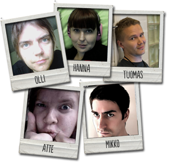

Taukkis-sovellus on toteutettu syksyllä 2012 Helsingin yliopiston tietojenkäsittelytieteen laitoksen
Innopaja-harjoitustyönä. Taukkis osallistuu Apps4Finland-kilpailun sovellussarjaan. Taukkis-tiimiin
kuuluvat opiskelijat Atte Hinkka, Tuomas Husu, Mikko Johansson, Olli Jokinen ja Hanna Mäenpää.